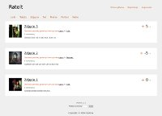
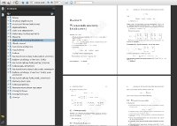

About the portfolio
My portfolio includes projects that I have carried out independently or in a team, at work, at the university, and at high school.
This portfolio does not include all of my work - I have selected only the major projects.
Websites (kopernik.mielec.pl - I was a part of the development team, Euroschool Online - a website developed in a contest, www.czermin.pl - the website of the Czermin Municipality Office, www.mooble.com - for which I wrote several modules), as well as programs and scripts optimizing server administration are not included.
GitHub
- See repositories list on my GitHub account.
Sabre Polska Sp. z o.o.
- Customer Profiles - the fundamental platform for Sabre’s internal applications and external clients used to store, process, validate and provide profiles of airline passengers
- Kraken - an application enabling communication between the passengers of a given flight
- Profiles Data Migrator - an application supporting the migration of data of 30M+ passengers of airlines from the existing server to the new generation system
MGM Optima Sp. z o.o.
- RateIt - a library allowing for very fast creation of online applications
- eMailDownloader - a library allowing for downloading e-mails and identifying bounce e-mails
- Jewelry Course - Editor - an editor for the kurs-bizuterii.pl website offering jewelry courses
Sylogic Sp. z o.o.
- Raporty (Reports) - an application for post-training reports (questionnaires and knowledge tests)
- Zlecenia (Tasks) - a system for comprehensive services in terms of traditional training courses
- Nasza Chatka - a web portal offering agency services for construction companies and their clients
ConSol* Consulting & Solutions Software Poland Sp. z o.o
- Smart Gruper - an application enabling hospitals to classify their services into the proper JGP system category
- WebCTI - Asterisk / ConSol* CM - an R&D project intended to integrate the Asterisk switchboard and the ConSol*CM CRM system
- ConSol* CM - an advanced CRM system
Other
- Matematyka (Mathematics) - a script
- Sudoku Solver - a Sudoku-solving application employing logical strategies
- Loader - a program for safe execution of programs
- fizyka.kopernik.mielec.pl - a website dedicated to the issues discussed in physics classes in high school
Customer Profiles
A web service and database platform for storing, validating, processing and providing passenger profiles for Sabre’s key internal applications and external clients (Travel Network and Airline Solutions). The platform is built on SOA architecture. It’s high-performance, scalable, and offers high availability, guaranteeing a high level of data security.
Technologies and tools used:
- Java 1.7
- Spring Framework
- JPA (Hibernate), myBatis
- Apache Camel
- XSLT, XPath, XML, XML Schema
- Google Guava, Apache Commons
- JUnit, Mockito, Fest
- Apache Maven
- Oracle
Kraken
Kraken is a project done for the HackDay 2012 contest organized by Sabre Polska for its employees. The project won the audience award.
The idea of the contest was to write any software of one’s choice within 24 hours (noon to noon).
The idea of our team was to introduce the idea of social media to the world of aviation. Our application was designed to enable communication between the passengers of a given flight and:
- the other passengers of this flight,
- the airport services (including automatic information on open gate, ready luggage etc.),
- the airlines that run a given flight (information on flight delays etc.),
- the plane crew.
Kraken is a mobile application - the passenger doesn’t have to look for information; information follows the passenger.
Technologies and tools used:
- Clojure
- Noir - The Clojure web framework
- FleetDB - a schema-free database optimized for agile development
- Leiningen - a build automation tool for the Clojure programming language
- Backbone.js
- jQuery Mobile
- REST
- JSON
Release The Kraken!
Profiles Data Migrator
An application supporting the migration of data of 30M+ passengers of airlines from the existing server to the new generation system.
PDM (Profiles Data Migrator) automatizes the migration process, which includes:
- reading data by sending XML requests via HTTP and SOAP endpoints,
- translating data between XML schemes of the existing system and the new system,
- maintaining high quality by means of comparing data read from the existing and the new system.
Technologies and tools used:
- Java 1.6 (multithreading)
- Apache Wicket (JQWicket)
- Spring Framework
- JPA (Hibernate)
- Google Guava, Apache Commons
- AspectJ
- JUnit, Mockito, Fest
- Apache Maven
- MySQL
- HSQLDB
RateIt
A library enabling very fast creation of web applications that allow users to post texts, links, images and films, as well as rate and comment on the published materials.
The user of the library can create a web service using only the jar archive, a simple configuration file (or several of them in more complex solutions) and a layout (CSS and graphics).
Additionally, the library user can expand some of the functionalities by writing their own Java modules and integrating them with the library in an easy way.
Technologies and tools used:
- Java 1.6
- Apache Wicket (Stateless, wiQuery)
- Spring Framework
- JPA (Hibernate)
- Bean Validation (Hibernate Validator)
- Google Guava
- AspectJ
- Jasypt
- XStream
- JUnit, Mockito, Fest
- Apache Maven
- Postgresql
- HSQLDB
eMailDownloader
A library enabling the download of e-mails via the IMAP protocol and conversion to JavaBean objects. Bounce e-mails are identified and marked.
Technologies and tools used:
- Java 1.6
- Spring Framework
- JavaMail
- XStream
- jsoup
- Apache Maven
Jewelry Course - Editor
For the kurs-bizuterii.pl I have produced an editor of the classes presented on their website.
Technologies and tools used:
- Java 1.6
- Apache Wicket
- Spring Framework
- Hibernate
Raporty (Reports)
In an individual project for Montownia Projektów, I produced the Raporty (Reports) application used for post-training reports - questionnaires and knowledge tests.
The project included several tasks:
- database design,
- implementation of the model layer,
- implementation of the services layer,
- implementation of the view layer,
- integration with the Zlecenia (Tasks) project,
- configuration of Apache Maven for the project and integration with the Zlecenia (Tasks) project.
Technologies and tools used:
- Java 1.6
- Apache Wicket
- Spring Framework
- Hibernate
- Apache Maven
Zlecenia (Tasks)
In the project for Montownia Projektów and House of Skills, I designed a system of comprehensive services related to traditional training courses.
My tasks included:
- designing the database,
- implementing the model layer - model class, DAO
- implementing the service layer,
- configuring Apache Maven for the project.
Technologies and tools used:
- Java 1.6
- Java Server Faces
- PrettyFaces
- RichFaces
- Apache Tiles
- Spring Framework
- Hibernate
- Apache Maven
Nasza Chatka
From the www.nasza-chatka.pl website:
"Nasza-chatka.pl is a place where people in need of professional construction, renovation or repair works can quickly and easily find a contractor meeting their requirements. We wish to facilitate communication between solid companies and their potential Clients."
In this project, my tasks included:
- implementing new functionalities,
- fixing errors.
Technologies and tools used:
- Java 1.6
- Java Server Faces
- PrettyFaces
- RichFaces
- Apache Tiles
- Spring Framework
- Hibernate
- Apache Ant
- jQuery
Smart Gruper
From the www.smartgruper.pl website:
"Smart Gruper is an IT tool allowing hospitals to classify their services into proper groups of the JGP system. Smart Gruper JGP is a new product that should satisfy the needs of the most demanding users in the medical sector.
Smart Gruper can be used a separate web application or an application fully integrated with the existing hospital system. The application attributes the JGP on the basis of input data, such as: date of admission and release, age, diagnosis, procedures."
While employed at ConSol* Consulting & Solutions Software Poland Sp. z o.o. (www.consol.pl), I took part in producing the Smart Gruper application that was successfully introduced at the hospital in Sucha Beskidzka.
In this project, my tasks included:
- implementing the model layer - model class, DAO,
- implementing the controller layer - services (except for the service responsible for the grouping algorithm),
- implementing the view layer - administrator’s interface, upgrades to the user’s interface,
- configuring the web applications container and installing applications.
Technologies and tools used:
- Java 1.5
- Apache Wicket
- Spring Framework
- Hibernate
- Apache Maven
WebCTI - Asterisk / ConSol* CM

An R&D project developed while working at ConSol* Consulting & Solutions Software Poland Sp. z o.o. (www.consol.pl).
The project was intended to:
- examine the Asterisk switchboard (www.asterisk.org) in view of integration with the ConSol*CM CRM system (www.consol.com/crm-software/)
- investigate the possibility of configuring Asterisk in a multi-division/multi-instance environment,
- implement the WebCTI module allowing for integrating Asterisk and ConSol*CM (Java 1.5, asterisk-java, WebCTI API),
- produce documentation.
Consol* CM
ConSol*CM (www.consol.com/crm-software/) is an application for managing communication processes in companies of any size and operating in any field.
Typical features supported by ConSol*CM:
- Helpdesk, IT support, IT management in accordance with ITIL,
- Service management such as complaint and claims management,
- Process management and task follow-up,
- Lead management and sales regulation.
Processes of each type are easily configurable with the use of the built-in workflow engine.
Matematyka (Mathematics) (Polish only)
"Mathematics - lecture notes" s a collection of lecture notes I prepared on the basis of the lectures in Mathematics while studying Aviation and Aeronautics at the Polish Air Force Academy in Dęblin.
The collection is based on a number of books, so that it is accessible, with in-document links allowing for finding previously defined notions, so that every concept in the document is defined.
The following issues are covered:
- relations,
- algebraic structures,
- vector space,
- complex number field,
- polynomials, rational functions,
- matrices,
- square matrix determinant,
- simultaneous equations,
- analytic geometry,
- numerical sequences, numerical series, function sequences, function series,
- differential calculus for single-variable and multi-variable functions,
- integral calculus for single-variable function,
- ordinary differential equations.
Sudoku Solver
Sudoku Solver is an application employing logical strategies in solving Sudoku.
The application solves the Sudoku entered by the user and presents the solution or solutions (if there is no single solution).
Rules and strategies used:
- the rules of classical Sudoku: in each row, column and nine-field square, there are nine numbers from 0 to 9,
- looking for single elements,
- looking for singletons,
- looking for pairs.
Technologies and tools used:
- Java 1.6
- Apache Wicket
- Spring Framework
- Apache Maven
Loader
I wrote the “Loader for safe execution of programs” as part of the “Operating Systems” course while studying at the Faculty of Electrical Engineering, Automatics, Computer Science and Electronics of the AGH University of Science and Technology in Cracow.
Program idea:
The program runs program X and allows for its execution on the following conditions:
- program X has a limited maximum amount of primary storage to use,.
- program X cannot be executed longer than for the time set,
- program X may read from the standard input or from files it is authorized to access (controlled by the Loader),
- as above - with respect to save files,
- program X cannot use system functions (such as fork, exec, socket operations, signals, pipes) that could result with system information leak (e.g. the /etc/passwd file),
- the Loader runs programs written in various languages.
Mechanisms:
- process control (fork, exec, wait, exit),
- defining process execution limits (setrlimit),
- analysis of system calls (ptrace),
- operations on the file system (readlink, stat).
fizyka.kopernik.mielec.pl (Polish only)
A website dedicated to the issues discussed in physics classes in high school. Currently, only the copy linked above is available.
Once completed, the website became very popular, with many webpages linking it, many forum users quoted it. The website appear on Google’s page one when searching for “fizyka” (“physics”).
- Mikhail Bulgakov - The Master and Margarita - KorovyovIt isn't an ID that defines a writer, but what he has written!
- Contact meŁukasz Kusek
phone: +48 509 955 365
lukasz.kusek {at} geomap.biz